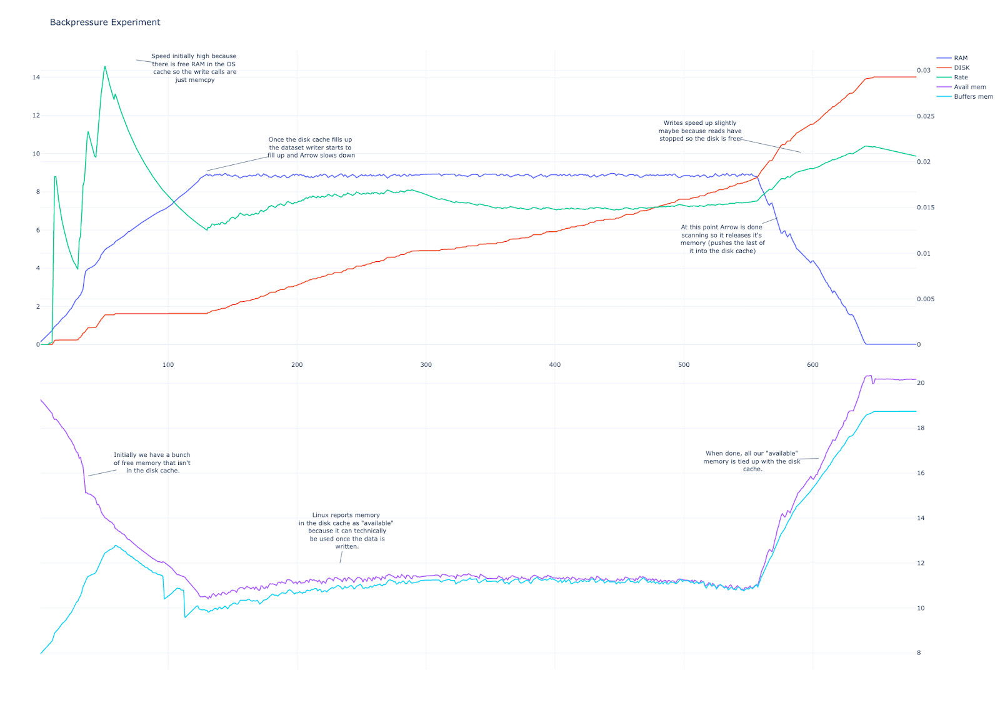

import pyarrow as pa
import pyarrow.csv as csv
import pyarrow.parquet as pq
import pyarrow.dataset as ds
import pandas as pd
import numpy as np
import statistics
import timeit
import glob
import osNote: This post is an extended version of a post previously published on the Voltron Data blog
Reading and writing data across different systems requires a file format that is understood by both. File formats like CSV or JSON are highly portable as they are text-based. However, they lack a schema definition thus requiring either the user to specify the schema upfront or the system to infer the data types of columns. Apache Parquet or ORC are column-oriented file formats that support compression and provide schema which makes reading the data much more efficient.
In a recent post, François Michonneau talks about creating an Arrow dataset and explores various file formats supported by the Arrow ecosystem and shows the efficiency of the parquet format for storing and reading the data. In this post, we’ll continue that thought and showcase how to seamlessly convert large CSV files to parquet so you can take advantage of the space and time benefits.
Apache Parquet
Apache Arrow and Apache Parquet go hand in hand. Apache Parquet is a columnar format and Parquet formatted files can be read into Arrow arrays and, vice versa, Arrow arrays written back to Parquet files. Apache Parquet format also carries metadata so each column read back will retain the proper data type. The same, unfortunately, cannot be said for CSV files.
The best gift you can give yourself as a data scientist or engineer is to ditch CSVs and move to Parquet! Yes that does mean you will have to read those CSV files one more time, but once you transcode them to Parquet format you can step away and watch your data pipelines start flowing smoothly again!
Here’s how.
Preliminaries
Our first step is to use the right tools: in Python we’ll begin with our imports, in R we’ll load some packages.
library(dplyr)
library(arrow)
library(bench)
library(here)
library(fs)Let’s also create some helper variables to keep track of all the files we’re going to use as this post progresses. This step isn’t strictly needed but it will help keep our code tidy later.
# data directory
data_dir = 'pydata'
if not os.path.isdir(data_dir):
os.mkdir(data_dir)
# csv files
csv_file = f'{data_dir}/large_dataset.csv'
csv_file_huge = f'{data_dir}/huge_dataset.csv'
# parquet files
parquet_file_snappy = f'{data_dir}/large_dataset_snappy.parquet'
parquet_file_gzip = f'{data_dir}/large_dataset_gzip.parquet'
# folder for multi-file dataset
dataset_dir = f'{data_dir}/huge_dataset'# data directory
data_dir <- "rdata"
if(!dir_exists(data_dir)) {
dir_create(data_dir)
}
# csv files
csv_file <- path("rdata", "large_dataset.csv")
csv_file_huge <- path("rdata", "huge_dataset.csv")
# parquet files
parquet_file_snappy <- path("rdata", "large_dataset_snappy.parquet")
parquet_file_gzip <- path("rdata", "large_dataset_gzip.parquet")
# folder for multi-file dataset
dataset_dir <- path("rdata", "huge_dataset")Helper function to report the median time taken to execute a function:
def median_time(fun, repetitions = 7):
time = timeit.repeat(fun, number = 1, repeat = repetitions)
return(statistics.median(time))median_time <- function(fun, repetitions = 7) {
benchmarks <- mark(fun(), iterations = repetitions, check = FALSE)
return(benchmarks$median)
}Generate a large random data set
To demonstrate how it all works, we’ll need some data. For this post, what we’ll do is create a table that will occupy roughly 2GB in memory. If we have 45 columns of double precision numeric data in our table, how many rows should our table have?
columns = 45
memory_size = 2*1024**3
data_type = np.dtype('float64')
rows = memory_size / columns / data_type.itemsize
print(f'Size in memory: {memory_size / (1024**3)}GB')
print(f'Number of rows: {int(rows):,}')
print(f'Number of columns: {columns}')Size in memory: 2.0GB
Number of rows: 5,965,232
Number of columns: 45bytes_float <- 8
bytes_total <- 2 * 1024 ^ 3
n_columns <- 45
n_rows <- round(bytes_total / (n_columns * bytes_float))
cat("Size in memory:", round(bytes_total / (1024 ^ 3), digits = 1), "GB\n")
cat("Number of rows:", n_rows, "\n")
cat("Number of columns:", n_columns, "\n")Size in memory: 2 GB
Number of rows: 5965232
Number of columns: 45 We’ll need about 6 million rows. Armed with this knowledge let’s create a data set of the appropriate size and write the results to a CSV file:
if not os.path.isfile(csv_file):
dataset = pa.table(
{
f'col_{i}': np.random.randn(int(rows))
for i in range(columns)
}
)
options = csv.WriteOptions(include_header=True)
csv.write_csv(dataset, csv_file, options)if(!file_exists(csv_file)) {
matrix(
data = rnorm(n_rows * n_columns),
nrow = n_rows,
ncol = n_columns
) |>
as.data.frame() |>
write_csv_arrow(csv_file)
}When stored in memory, this object – by design – is about 2GB in size. How large is it on disk as a CSV file?
def file_size(file):
n_bytes = os.path.getsize(file)
print(f'{(n_bytes / (1024**3)):.2f}GB')
file_size(csv_file)4.91GBfile_size(csv_file)4.91GIt’s almost 5GB: it’s more than doubled in size when we save to CSV. That’s not surprising because CSV isn’t designed to be efficient, but it’s not something any data scientist or engineer wants to see.
Transcoding CSV to Parquet
Apache Parquet format is a preferred way to store columnar data: it requires much less compute cycles and it supports compression, rendering much smaller file sizes. By default the compression used is snappy but we will also try GZip.
Snappy compression
Let’s time how long it takes to transcode our CSV file to the parquet with Apache Arrow.
def transcode_snappy():
arrow_table = pa.csv.read_csv(csv_file)
pq.write_table(arrow_table, parquet_file_snappy);
median_time(transcode_snappy)11.038464039000246transcode_snappy <- function() {
read_csv_arrow(csv_file) |> write_parquet(parquet_file_snappy)
}
median_time(transcode_snappy)[1] 11.3sSo, end-to-end it takes maybe 8 to 10 seconds to read CSV and save it to a parquet file. The size of the file is less than half of what it used to be in CSV:
file_size(parquet_file_snappy)2.01GBfile_size(parquet_file_snappy)2.01GGZip compression
Now let’s try with GZIP.
def transcode_gzip():
arrow_table = pa.csv.read_csv(csv_file)
pq.write_table(arrow_table, parquet_file_gzip, compression='gzip');
median_time(transcode_gzip)94.39236859499943transcode_gzip <- function() {
read_csv_arrow(csv_file) |>
write_parquet(parquet_file_gzip, compression = "gzip")
}
median_time(transcode_gzip)[1] 1.5mOverall it takes about 10 times as long to complete the transcoding with gzip than it takes when using snappy, but you do get end up with a slightly more compressed file at the end. Is it worth the wait? You need to decide.
file_size(parquet_file_gzip)1.93GBfile_size(parquet_file_gzip)1.93GReading Parquet Files
Having transcoded our data set from CSV to Apache Parquet, let’s compare read times for the two file formats. We’ll look at the CSV files first. To make things simple we’ll read the data to an Arrow Table, but we would still see the same performance difference between CSV and Parquet if we read the data to a panda in Python or a data frame in R.
def read_csv_data():
csv.read_csv(csv_file)
median_time(read_csv_data)4.780269909999333read_csv_data <- function() {
read_csv_arrow(csv_file, as_data_frame = FALSE)
}
median_time(read_csv_data)[1] 5.28sNow let’s try reading the Parquet files:
def read_parquet_arrow():
pq.read_table(parquet_file_snappy)
median_time(read_parquet_arrow)0.2946250789973419read_parquet_arrow <- function() {
read_parquet(parquet_file_snappy, as_data_frame = FALSE)
}
median_time(read_parquet_arrow)[1] 390msAbout one third of a second. Not too bad!
Comparing Parquet to Compressed CSV
At this point you might be wondering how Parquet files compare to compressed CSV. A common solution to the shortcomings of CSV files it to use gzip or similar utility to compress them. This can lead to substantially reduced file sizes. For example, the data set we’ve used in this blog post is about the same size when stored as a gzipped CSV file (2.4GB) as it is when stored as a snappy-compressed Parquet file (2.2GB). The reduced file size might lead to faster load times, but in a local setting these speed-ups are mostly a function of the file size: they don’t tell us much about how many CPU cycles reading these files consumes. On linux you can collect some performance statistics using the perf utility:
Here are the performance statistics for reading the gzipped CSV file:
perf stat python -c "from pyarrow import csv; csv.read_csv('pydata/large_dataset.csv.gz')" Performance counter stats for 'python -c from pyarrow import csv; csv.read_csv('pydata/large_dataset.csv.gz')':
45,946.29 msec task-clock # 2.458 CPUs utilized
97,475 context-switches # 2.121 K/sec
37,060 cpu-migrations # 806.594 /sec
2,379,661 page-faults # 51.792 K/sec
163,823,235,007 cycles # 3.566 GHz
266,069,641,526 instructions # 1.62 insn per cycle
40,294,887,901 branches # 877.000 M/sec
1,787,412,162 branch-misses # 4.44% of all branches
603,296,698,280 slots # 13.130 G/sec
136,118,412,337 topdown-retiring # 19.2% retiring
468,702,274,904 topdown-bad-spec # 66.3% bad speculation
67,807,557,217 topdown-fe-bound # 9.6% frontend bound
34,659,537,044 topdown-be-bound # 4.9% backend bound
18.692289542 seconds time elapsed
42.868337000 seconds user
6.071931000 seconds sysTo compare, this is what we get when reading the snappy-compressed parquet file:
perf stat python -c "from pyarrow import parquet; parquet.read_table('pydata/large_dataset_snappy.parquet')" Performance counter stats for 'python -c from pyarrow import parquet; parquet.read_table('pydata/large_dataset_snappy.parquet')':
4,052.57 msec task-clock # 2.507 CPUs utilized
8,212 context-switches # 2.026 K/sec
2,898 cpu-migrations # 715.102 /sec
1,105,237 page-faults # 272.725 K/sec
12,740,967,348 cycles # 3.144 GHz
11,629,653,540 instructions # 0.91 insn per cycle
1,953,615,539 branches # 482.069 M/sec
15,002,905 branch-misses # 0.77% of all branches
38,990,127,780 slots # 9.621 G/sec
11,304,974,170 topdown-retiring # 26.6% retiring
13,387,988,026 topdown-bad-spec # 31.5% bad speculation
7,239,172,422 topdown-fe-bound # 17.0% frontend bound
10,599,009,432 topdown-be-bound # 24.9% backend bound
1.616350503 seconds time elapsed
1.370856000 seconds user
2.709456000 seconds sys
Reading the parquet file consumes 12.7 billion CPU cycles; for the gzipped CSV the figure is 163.8 billion.
Here are the performance statistics for reading the gzipped CSV file:
perf stat Rscript -e "arrow::read_csv_arrow('rdata/large_dataset.csv.gz', as_data_frame = FALSE)" Performance counter stats for 'Rscript -e arrow::read_csv_arrow('rdata/large_dataset.csv.gz', as_data_frame = FALSE)':
49,814.86 msec task-clock # 2.343 CPUs utilized
104,662 context-switches # 2.101 K/sec
39,809 cpu-migrations # 799.139 /sec
2,444,561 page-faults # 49.073 K/sec
176,418,525,767 cycles # 3.541 GHz
277,797,226,186 instructions # 1.57 insn per cycle
43,508,214,462 branches # 873.398 M/sec
1,777,773,657 branch-misses # 4.09% of all branches
656,019,283,120 slots # 13.169 G/sec
128,143,770,282 topdown-retiring # 16.2% retiring
534,939,317,766 topdown-bad-spec # 67.8% bad speculation
65,978,499,316 topdown-fe-bound # 8.4% frontend bound
60,111,173,500 topdown-be-bound # 7.6% backend bound
21.263720897 seconds time elapsed
47.243353000 seconds user
5.763587000 seconds sysTo compare, this is what we get when reading the snappy-compressed parquet file:
perf stat Rscript -e "arrow::read_parquet('rdata/large_dataset_snappy.parquet', as_data_frame = FALSE)" Performance counter stats for 'Rscript -e arrow::read_parquet('rdata/large_dataset_snappy.parquet', as_data_frame = FALSE)':
2,675.35 msec task-clock # 3.220 CPUs utilized
535 context-switches # 199.974 /sec
38 cpu-migrations # 14.204 /sec
628,615 page-faults # 234.966 K/sec
9,932,298,420 cycles # 3.713 GHz
11,800,309,617 instructions # 1.19 insn per cycle
2,155,219,064 branches # 805.585 M/sec
12,280,294 branch-misses # 0.57% of all branches
30,850,755,460 slots # 11.532 G/sec
11,784,389,574 topdown-retiring # 36.8% retiring
4,243,149,218 topdown-bad-spec # 13.2% bad speculation
6,247,234,332 topdown-fe-bound # 19.5% frontend bound
9,768,481,508 topdown-be-bound # 30.5% backend bound
0.830735747 seconds time elapsed
1.609327000 seconds user
1.073598000 seconds sys
Reading the parquet file consumes 9.9 billion CPU cycles; for the gzipped CSV the figure is 176.4 billion.
These results are of course specific to the machine we used for the tests – a 2022 Dell XPS 13 laptop running Ubuntu 20.04 – but so are all the other numbers reported here. The fine details are less important than the big picture result:
Even when a compressed CSV file is similar in size to a Parquet file, it will consume far more time and system resources to read. Any time that you have to pay for time or CPU cycles, deploying a solution using Parquet files is likely to be much more cost-effective than using compressed CSV data.
Transcoding Larger-Than-Memory Datasets
In all our examples so, the data set has been small enough that the CSV file could fit easily into the memory of a modern computer with 8GB of RAM. Plenty of times, however, you might find yourself with a data set that is much larger than the RAM available. This makes transcoding a little trickier, but Apache Arrow can help with this.
First, with a simple bash script, we can create a huge data set by concatenating eight copies of our large_dataset.csv together, creating a data file that is roughly 40GB on disk. Our bash script might look like this:
make-huge-csv.sh
#!/bin/bash
large_csv="${1}/large_dataset.csv"
huge_csv="${1}/huge_dataset.csv"
for i in {0..7}
do
if [[ $i -eq 0 ]] ; then
head -1 $large_csv > $huge_csv
fi
tail -n +2 $large_csv >> $huge_csv
doneAt the terminal we’d use a command like one of thee two, depending on whether we are looking in the R data folder or the Python data folder:
./make-huge-csv.sh "../pydata" # Python
./make-huge-csv.sh "../rdata" # RHaving run this script, let’s check the size of the huge CSV file we have created:
file_size(csv_file_huge)39.26GBfile_size(csv_file_huge)39.3GThat’s close to 40GB. This won’t fit in RAM for a typical machine. However, using Arrow’s dataset interface we can use the “backpressure” functionality to slow down the read of a CSV file as we write out its parquet counterpart. The backpressure feature simply prevents the system from running out-of-memory when reading the data: when Arrow’s writer cannot keep up with the amount of incoming bytes from the reader it sends a backpressure message to the reader to slow down the reading.
It shows well on this graph.

Initially, there’s plenty of RAM available so reading and writing rates are high. However, once the disk cache gets full Arrow slows down, maintaining a relatively stable amount of occupied memory until it is done reading the file. At this point, Arrow will start releasing the memory and the writing rate will peak up a bit until done.
The backpressure feature has been automatically available in Arrow since version 6.0.0 and is used automatically when using the dataset API. Let’s put it to work:
def transcode_huge_csv():
dataset = ds.dataset(csv_file_huge, format='csv')
ds.write_dataset(dataset, dataset_dir, format='parquet')
median_time(transcode_huge_csv, repetitions = 1)184.2342482189997transcode_huge_csv <- function() {
csv_file_huge |>
open_dataset(format = "csv") |>
write_dataset(path = dataset_dir)
}
median_time(transcode_huge_csv, repetitions = 1)[1] 3.16mThis time around we only ran each test once because it’s a little time consuming, but it’s enough to give you a pretty good sense of how long it takes to read and convert a 40GB CSV file to parquet format on a laptop: about 2-3 minutes.
What about the file size? As you can see from the results below, if we use snappy compression the file size for the parquet encoded data is roughly half:
n_bytes = 0
filenames = glob.glob(f'{dataset_dir}/*')
for fn in filenames:
n_bytes += os.path.getsize(fn)
print(f'{(n_bytes / (1024**3)):.2f}GB')19.31GBdataset_dir |>
list.files(full.names = TRUE) |>
file_size() |>
sum()19.3GSummary
Using Apache Arrow to transcode data to Apache Parquet format makes a lot of sense and will save you time and boost your productivity in the future. To get started you can install the PyArrow library following the instructions found at arrow.apache.org/install.
Learn how a Voltron Data Enterprise Support subscription can help accelerate your success with Apache Arrow.
Reuse
Citation
BibTeX citation:
@online{navarro2022,
author = {Danielle Navarro and Tom Drabas, Weston Pace, Danielle
Navarro},
editor = {},
title = {Faster Data Processing with {Apache} {Arrow} and {Parquet}},
date = {2022-10-30},
url = {https://blog.djnavarro.net/posts/2022-10-30_transcoding-csv-to-parquet},
langid = {en}
}
For attribution, please cite this work as: